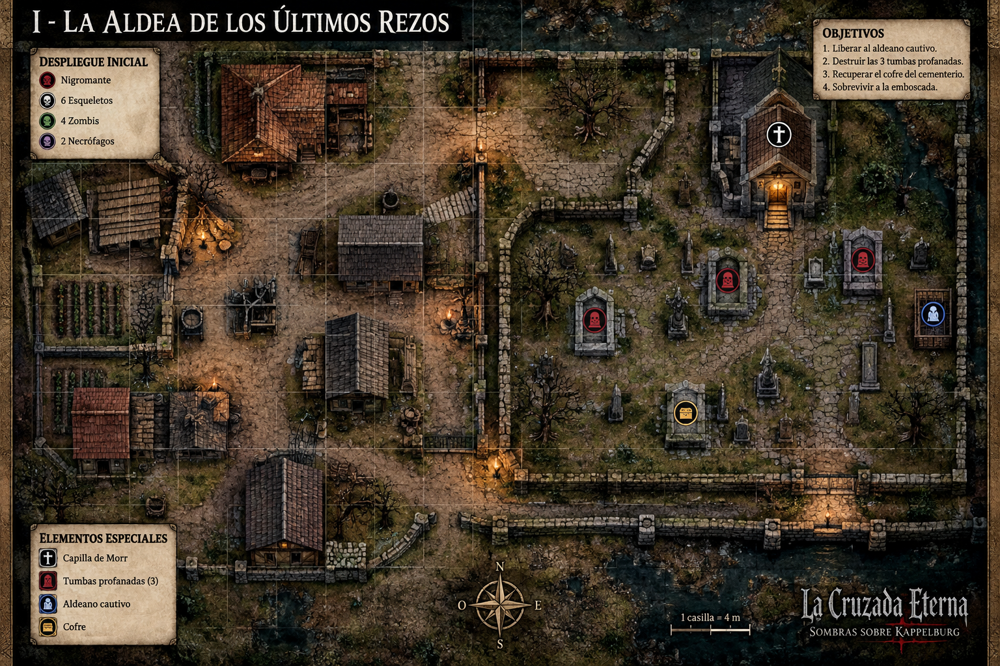
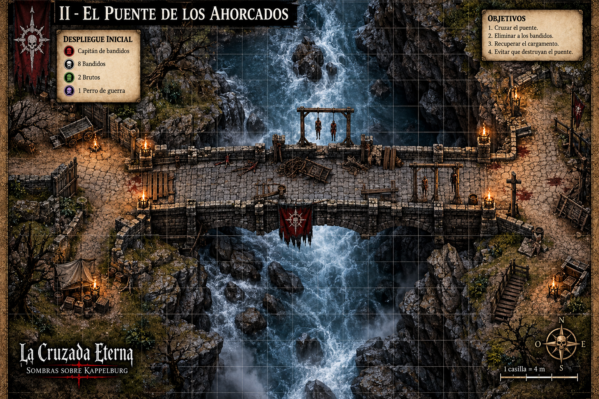
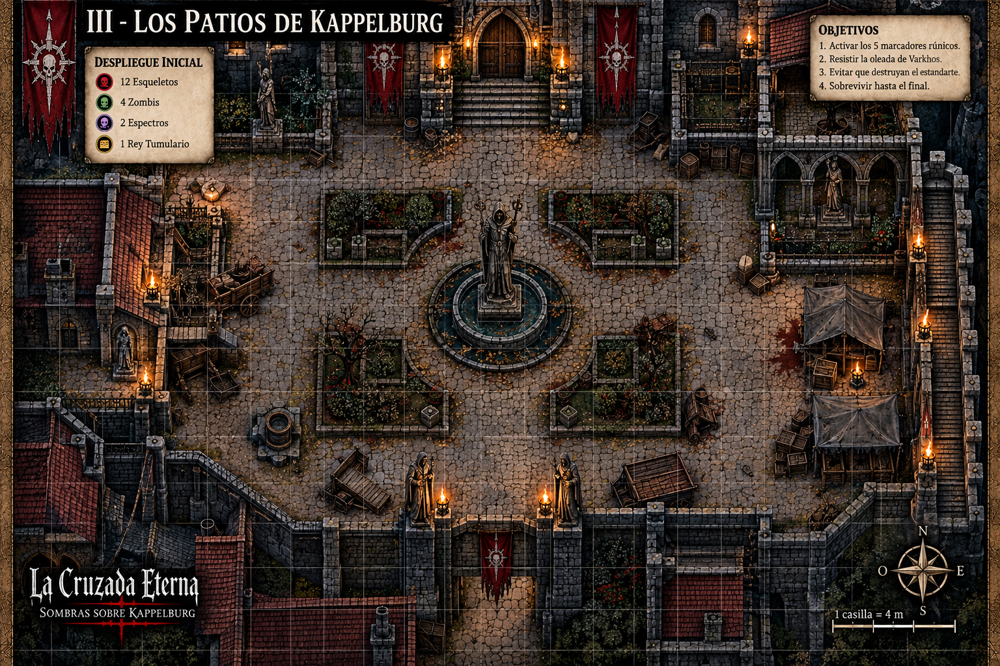
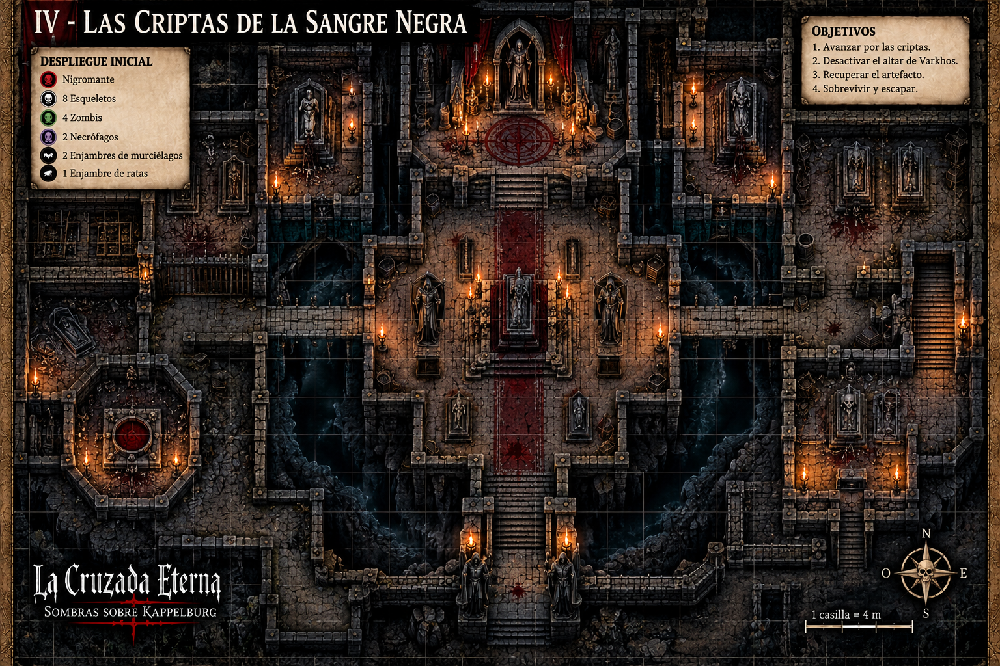
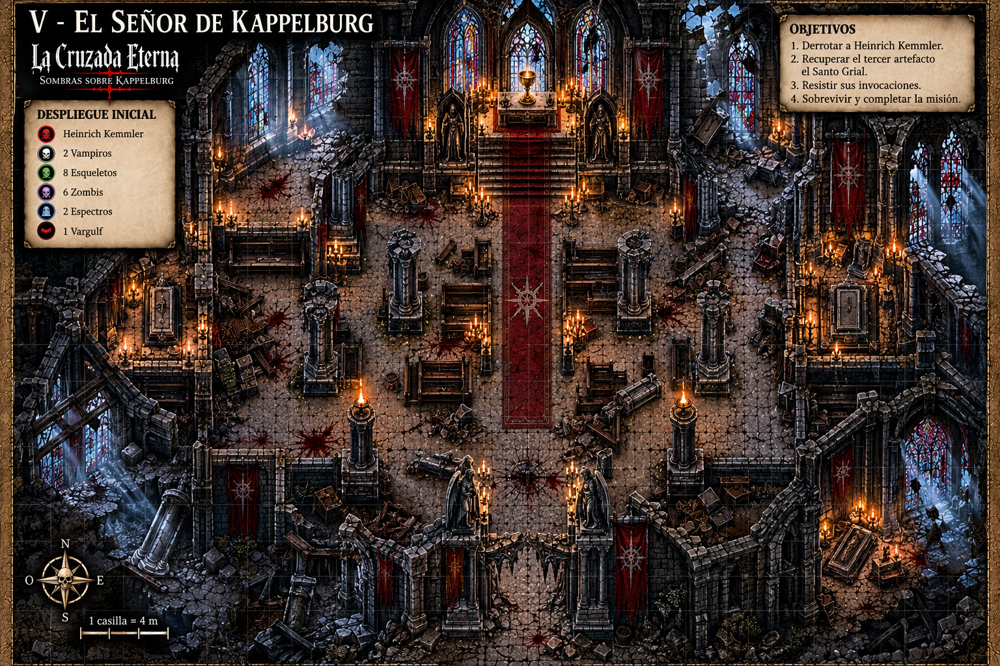

ARCHIVO CARTOGRÁFICO
CAMPOS DE BATALLA DE LA CRUZADA
CAMPAÑA PRINCIPAL
Pulsa cualquier mapa para abrirlo a tamaño grande. Puedes desplazarte por él y usar los controles para ampliar o reducir durante la partida.

Cementerio imperial, tumbas profanadas y ritual del Nigromante.

El paso mortal hacia Kappelburg.

Patios en ruinas antes de descender a las criptas.

Las profundidades malditas bajo Kappelburg.

Catedral gótica en ruinas, altar del cáliz y batalla final.